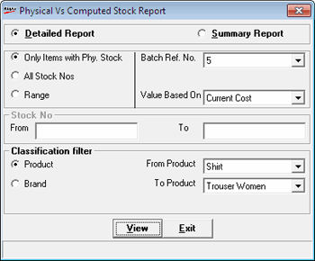
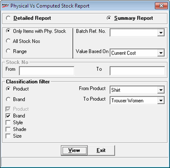

This report is taken after the completion of physical stock recording for all items.
The report shows the difference between physical and computer stocks available. Alarming differences will have to be analyzed and addressed properly, since such a situation can happen only when pilferages are at a high or the goods inwards, outwards and sales are not being properly recorded.
Generally, the personnel conducting physical stock take, prints this report and gets this signed by the shop owner before going ahead with the discrepancy updation where the physical stock values are moved to computer stock.
How to reach: Stock > Stock Take > Physical Vs Computed Stock
On invocation, the following window is displayed.

Detailed Report: Select to view a detailed report
Summary Report: Select to view a summarised report
Detailed Report
Only Items with Phy. Stock: To display items with Physical Stock
All Stock Nos: To display all items with Stock number
Range: To display items with in a range of stock number
Batch Ref. No. : Select the reference number from the list
Value Based On: Select the basis for the value from the list
Stock No. : This is activated on selecting Range
From: Enter the starting stock number
To: Enter the ending stock number
Classification Filter
Product: To view the detailed report product wise
From Product: Select the starting product in the range
To Product: Select the ending product in the range
Brand: To view the detailed report brand wise
Summary Report

Classification Filter
Product: To view the summary product wise
Brand: To view the summary brand wise
From Brand: Select the starting brand in the list
To Brand: Select the ending brand in the list
Select any or all SKUs, i.e., Product or Brand, Style, Shade and Size